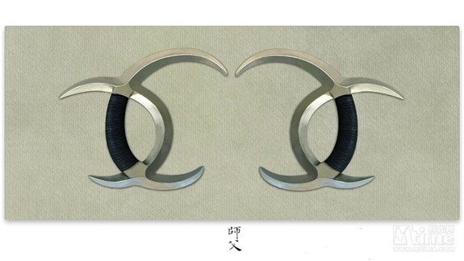
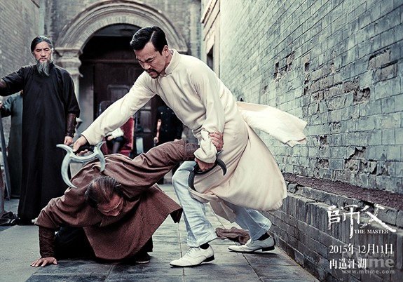
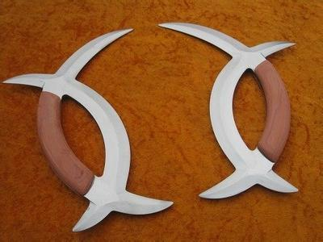
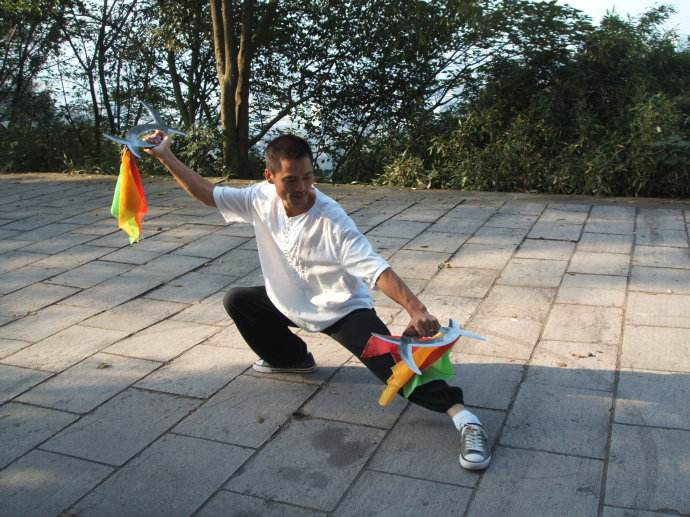

一. 子午鸳鸯钺
《师父》中戴立忍饰演的那位八卦门高手所用的武器就是子午鸳鸯钺，也是八卦门的独门兵器，且名声很大，单田芳《童林传》中童林就是使用此械，正史中更是由其所创。但知道者很多，知道怎么用的很少，该武器两刃冲内，一不小心就会伤到自己。其设计之巧妙，当属古代诸多兵器之顶峰。

片中陈识击败戴立忍之后，看到此物，说了巷战中唯一一句台词：“好兵器”。为什么换兵器，自然要用子午鸳鸯钺克制战身刀。子午鸳鸯钺前方双钺钩要比八卦刀的刀镡钩大，吃力足。陈识用八卦刀的绞锁方式，卸掉对方巨大的战身刀，也击败了陈观泰为首的战身刀队。


